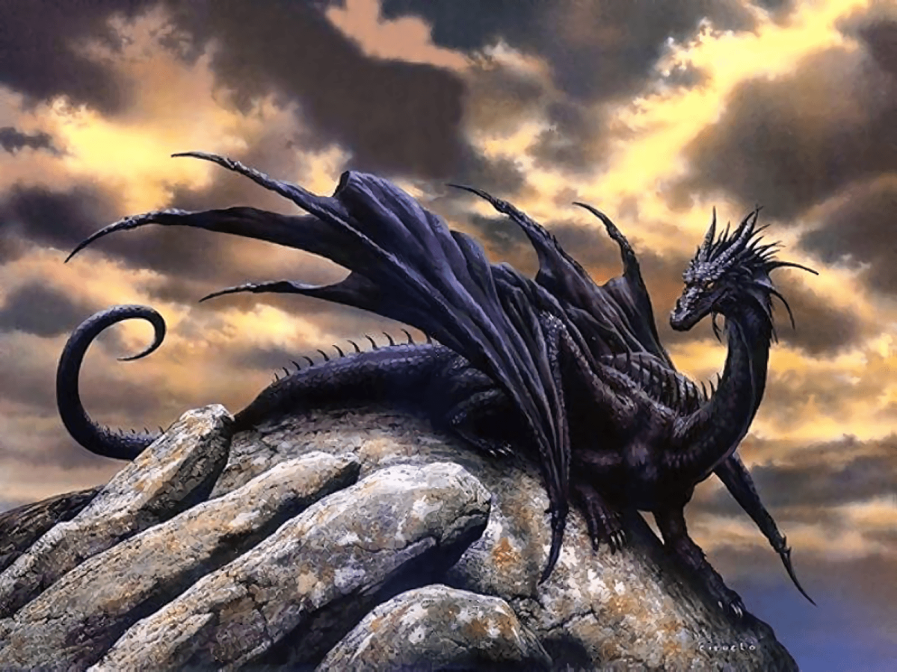

Драко́н (греч. δράκων) — собирательное название, объединяющее ряд мифических существ, фигурирующих в мифах и фольклоре многих народов мира. Представления о драконах значительно различаются в регионах мира, но европейские драконы времён Высокого Средневековья часто изображались с массивным змеевидным телом, имели крылья, рога, четыре лапы и были способны выдыхать пламя. Драконы в восточных культурах, такие как китайский дракон, обычно изображаются как бескрылые четвероногие существа с длинным змеевидным телом. Фольклорные предания приписывают им высокий интеллект и даже великую мудрость, их связывают с водными источниками и дождём.
Виды:
- Дракон европейский классический (Draco occidentalis magnus)
- Дракон геральдический (Draco geraldicus)
- Виверн (Draco africanus)
- Ледяной дракон (Draco occidentalis maritimus)
- Амфиптер (Draco americanus)
- Морской дракон (Draco marinus)
- Азиатский (китайский) лун (Draco orientalis)
- Накер (Draco troglodytes)
- Линдворм (Draco serpentalis)
- Гивр (Draco gallicus)